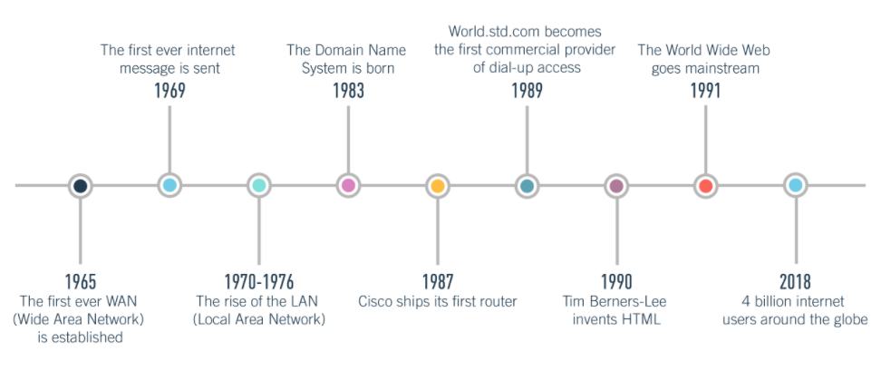
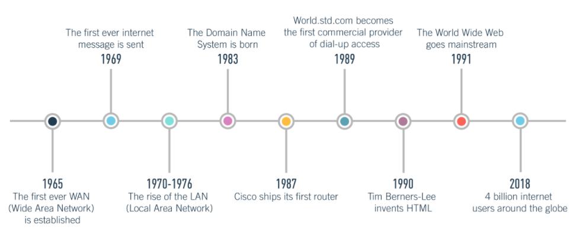
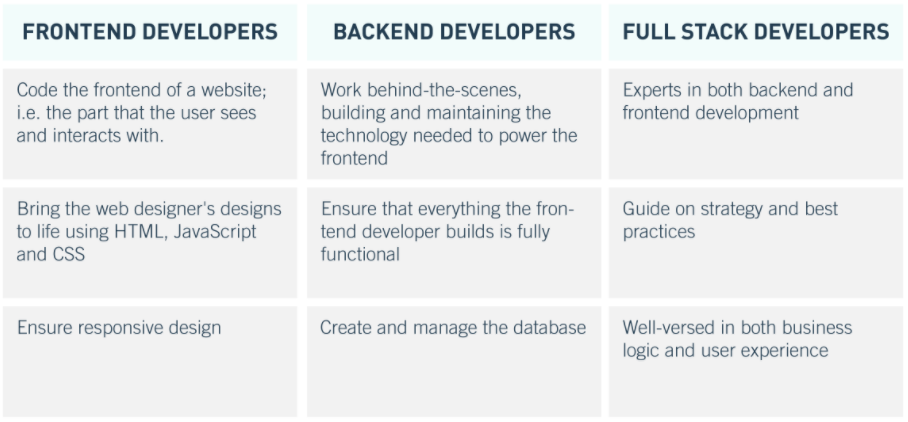

. What is The Dropshipping
. Benifits of Dropshipping
. Disadvantages of Dropshipping
. How much do I need to invest to start dropshipping?
. SO, is Dropshipping worth it?
. MORE INFORMATIONS
. Courses
. Resources
. other Blogs
Introduction to web developement
[For beginners]

In this blog you will gain a better idea of what is web development and what a web developer actually does and what your life might look like if you decided to take it on as a career or a side hustle.
Hopefully you will have the motivation to start learning web development and start building your own project which will may be very interesting and make you famous and rich.
What is Web Development ?
// also known as web programming
Web development is the process of creating websites and
applications for the Internet, or for a private network known as
an intranet. Web development is not concerned with website design;
Instead, it's all about the code and scripting that supports the
website's functionality.
Web development can be divided into three layers: client-side
coding (front end) and server-side coding (backend)
a- Client-side (The front-end): Client-side code is executed in a web browser and is directly related to what people see and interact with when they visit a website. Things like layout, fonts, colors, menus, and contact forms are all front driven.
b- Server-side (The back-end): Server-side scripting, or backend development, is about what happens behind the scenes. The backend is basically a part of the website that the user does not actually see. It is responsible for storing and organizing the data, and making sure that everything on the client side is running smoothly. It does this by communicating with the front end. When something happens on the client side - for example when a user enters their information to log in to a website, that information is stored on the server using server-side scripting
1
The difference between Web Development and Web Design:
You may hear the terms web development and web design used interchangeably, but these are two completely different things.
Imagine a web designer and web developer working together to build a machine: the developer will be concerned with the functional components while the designer will be responsible for the visuals - what the vehicle looks like - and the user experience that a vehicle provides, whether it's a smooth drive or not
Web designers design how a site looks and feels. They represent
website layout, and they make sure it's logical, easy-to-use, and
fun to use. They think about all the different visual elements:
What color schemes and fonts will be used? What buttons, drop-down
menus, and scroll bars should be included, and where? What
interactive touch points does the user interact with to go from
point A to point B? Web design also takes into account the
information structure of a site, and determines what content to
include and where to place it.
Web design is a very broad
field, and it is often broken down into more specific roles such
as user experience design, user interface design and information
engineering.
It is the job of a web developer to take this design and develop
it into a fully functional live website. The front end developer
takes the visual design as provided by the web designer and builds
it using markup languages like HTML, CSS, and JavaScript. Backend
developer builds most advanced website functionality, like
ecommerce website checkout functionality.
=> In short, a web designer is the engineer, while a web developer
is the builder or engineer
2
History of Web Development:


3
What Does a Web Developer Do?
The role of a web developer is to create and maintain websites. Web developers can work at home or independently, and the specific tasks and responsibilities will vary depending on whether they work as a front-end, back-end, or full-stack developer. Full stack developers specialize in both front end and back end; We'll go into more detail on what a full stack developer does later
Web developers are responsible for building a product that meets both the needs of the customer and the needs of the client or end user. Web developers collaborate with stakeholders, clients, and designers to understand the vision: How should the final website appear and function
A large part of web development also revolves around identifying and fixing errors in order to continually improve and improve your website or system. Therefore, web developers are the problem-solvers, regularly coming out with workarounds and solutions to keep things running smoothly.
Web developers are familiar with technology and understand how computers and web servers operate. They are also very familiar with many software programs, web applications and web programming languages, such as hypertext markup language (HTML), JavaScript (JS), Ruby on Rails, python, php and C++. They must be able to communicate effectively, set goals and meet deadline
4
Types of Web Developers:
Front-end developers A front-end developer is a web developer that encodes the front-end for a website. While web design is the way a website appears, front-end development is how that design is actually implemented on the web.
Backend developers - A backend developer is someone who builds and maintains the technology needed to run components that enable the user-facing side of a website to exist. Their back-end icon adds utility to everything the front end designer creates.
Full stack developers - Full stack developers understand how every part of the web development process occurs and can guide strategy and best practices. These developers will have an increasingly important role in future web development, and they will be able to take a look at the "big picture". They are familiar with the server side as well as the client side user experience.
5
Why should I become a Web Developer?
This is one of the most frequently asked questions, and now we'll
give the reasons why you should start thinking about being a web
developer
a-
You don't necessarily need a degree. Many successful web
developers are self-taught and do not have any formal
qualifications. With knowledge of a programming language and
experience in database management it is possible to enter the
field.
b-
The creative developers in general are the problem solvers.
Despite this, web developers are also able to create user
experiences.
c-
Becoming part of a community Perhaps more than any other field,
web development exposes its practitioners to countless online
communities. These communities are valuable resources and places
to interact and connect with like-minded people.
d-
Money! Demand for web developers continues to outpace supply. So
employers pay higher wages for the best talent available.
e-
You can work as a freelancer or as part of an organization. As a
freelancer, developers can pick and choose their projects and take
control of their careers.
f-
You can work remotely. The nature of web development means you can
work from anywhere in the world, on your own time - especially as
a freelancer.
g-
You can become a specialist Developers who greatly enjoy working
in a particular language can choose to specialize in and still
have a lot of work to do.
h-
It is a futuristic guide As web technology expands and evolves, so
does the demand for developers.
i-
It's fun With countless companies looking for new talent, there
are exciting opportunities to work in the field and gain creative
control and project ownership.
j-
You can expand into other areas web development skills are highly
transferable. The mobile sector, for example, has similar
interfaces, allowing web developers to easily move to mobile
development. Companies looking for new ways to interact with
customers are always looking for customer-facing web developers.
6
Tools you need to start Web Developemet:
1- Browser: google chrome, opera, firefox …..
2- Text editor: vs code, atome, sublime. ……
3- Git
4- Github
5- Stackoverflow
6- W3school
7- Computer
7
Skills required to become a Web Developer:
what are the languages?
Markup languages
Style Sheet Languages:
Database Languages:
What are libraries and frameworks?
what are the languages?
In the world of web development, languages are the building blocks that programmers use to create websites, applications, and programs. There are all kinds of different languages, including programming languages, markup languages, style sheet languages, and database languages.
Programming LanguagesA programming language is basically a set of instructions and commands that require a computer to produce a specific output. Programmers use so-called "high-level" programming languages to write source code. High-level languages use logical words and symbols, making them easier for humans to read and understand. High-level languages can be classified as either grouped or interpreted languages
C ++ and Java, for example, are compiled in high-level languages; They are first saved in a text-based format that can be understood by human programmers rather than computers. For the computer to run the source code, it must be converted into a low-level language; Any machine code. Compiled languages tend to be used to create software applications.
Interpreted languages like Perl and PHP do not need compilation. Alternatively, the source code written in these languages can be run through a compiler - a program that reads and executes the code. Localized languages are generally used to run scripts, such as those used to create content for dynamic websites.
Low-level languages are those that can be recognized and implemented directly on computers; They do not need interpretation or translation. Machine language and assembly language are some common examples of low-level languages.
Some of the most popular programming languages for 2018 include Java, C, C ++, Python, C #, JavaScript, PHP, Ruby, and Perl. More information: A beginner's guide to the 10 most popular programming languages
Markup languages are used to define a text file format. In other words, the markup language tells the program that displays the text how to format the text. The markup languages are perfectly readable with the naked eye - they contain standard words - but the coding marks are not visible in the final output.
The two most popular markup languages are HTML and XML. HTML stands for HyperText Markup Language and is used to create websites. When added to a plain text document, HTML tags describe how that document will be displayed by a web browser. To understand how HTML works, let's take the example of bold tags. The HTML version will be written as follows:
<b> Make this sentence bold! </b>
When the browser reads this, it knows to display that sentence in bold. This is what the user sees:
Make this sentence bold!
XML stands for Extensible Markup Language. It is a very similar markup language to HTML; However, while HTML is designed to display data with an emphasis on its form, XML is only designed to store and communicate data. Unlike HTML, XML tags are not predefined; Instead, they were created by the author of the document. The goal of XML is to simplify data sharing and transmission, platform changes and data availability, as it provides a software and hardware-independent means of storing, transmitting, and sharing data.
A style sheet is basically a set of stylistic rules. Style sheet languages are used, in the literal sense of the word, to design documents written in markup languages.
Consider a document written in HTML and designed using CSS (Cascading Style Sheets), which is a style sheet language. HTML is responsible for the content and structure of a web page, while CSS determines how that content is presented visually. CSS can be used to add colors, change fonts, and insert backgrounds and borders, as well as pattern styles. CSS is also used to optimize web pages for responsive design, ensuring that they are adapted to whatever device the user uses.
Languages are not only used to build websites, software, and applications; It is also used to create and manage databases.
Databases are used to store huge amounts of data. Spotify music, for example, uses databases to store music files, as well as data about a user's listening preferences. Likewise, social media applications such as Instagram use databases to store user profile information; Every time a user updates their profile in some way, the application database will also be updated.
Databases are not designed to understand the same languages that applications are programmed into, so it is imperative to have a language they
Web developers also work with libraries and frameworks. Despite a lot of confusion, they are not the same thing - although they exist to make it easier for a developer.
Libraries and frameworks are essentially collections of pre-written code, but libraries are smaller and tend to be used for more specific use cases. The library contains a bunch of helpful code, grouped together for later reuse. The purpose of the library is to enable developers to reach the same end goal while writing less code to get there.
Let's take the example of JavaScript, the language, and jQuery, which is a JavaScript library. Instead of writing, say, ten lines of code in JavaScript, a developer can take the pre-written condensed version of the jQuery library - saving time and effort.
7
Resources
Books
Other blogs

learn git hub pages
learn git hub pages
learn git hub pages
learn git hub pages
learn git hub pages
TECHNOLOGY
Table of Content